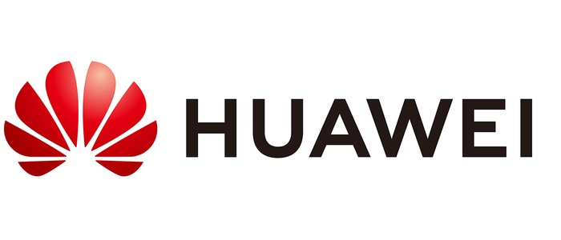
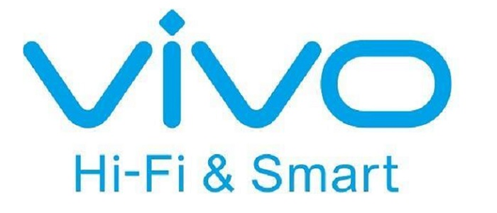

.png)

代表论文
- W. Zhang, M. Zhou, J. Cheng, Y. Liu and W. Zhang.
C2P-Net: Comprehensive Depth Map to Planar Depth Conversion for Room Layout Estimation.
IEEE Transactions on Pattern Analysis and Machine Intelligence(TPAMI), 2025. - Lin Zhang, Ran Song, Wenhao Tan, Lin Ma, Wei Zhang.
IGCN: A Provably Informative GCN Embedding for Semi-Supervised Learning with Extremely Limited Labels.
IEEE Transactions on Pattern Analysis and Machine Intelligence(TPAMI), 2024. - Zhiheng Li, Yujie Zhong, Ran Song, Tianjiao Li, Lin Ma, Wei Zhang.
DeTAL: Open-Vocabulary Temporal Action Localization with Decoupled Networks.
IEEE Transactions on Pattern Analysis and Machine Intelligence(TPAMI), 2024. - Yifan Wang, Lin Zhang, Ran Song, Hongliang Li, Paul L. Rosin, Wei Zhang.
Exploiting Inter-Sample Affinity for Knowability-AwareUniversal Domain Adaptation.
International Journal of Computer Vision (IJCV), 2023. - Shikuan Xie, Ran Song, Yuenan Zhao, Xueqin Huang, Yibin Li, Wei Zhang*.
Circular Accessible Depth: A Robust Traversability Representation for UGV Navigation.
IEEE Transactions on Robotics (T-RO), 2023. - Ran Song, Wei Zhang*, Yitian zhao, Yonghuai Liu and Rosin Paul L.
3D Visual saliency: an independent perceptual measure or a derivative of 2d image saliency?
IEEE Transactions on Pattern Analysis and Machine Intelligence(TPAMI), 2023. - Ran Song, Wei Zhang*, Yitian Zhao, Yonghuai liu.
Unsupervised Multi-View CNN for Salient View Selection and 3D Interest Point Detection.
International Journal of Computer Vision (IJCV), 2022. - Wei Zhang, B.R. Wang，L. Ma, W. Liu.
Reconstruct and Represent Video Contents for Captioning via Reinforcement Learning.
IEEE Transactions on Pattern Analysis and Machine Intelligence(TPAMI), 2019. - Wei Zhang, Y.M. Li, W.Z. Lu, X.S. Xu, Z.W. Liu, X.Y. Ji.
Learning Intra-video Difference for Person Re-identification.
IEEE Transactions on Circuits and Systems for Video Technology (T-CSVT), 2018. - Wei Zhang, B. Ma, K. Liu, R. Huang.
Video-Based Pedestrian Re-Identification by Adaptive Spatio-Temporal Appearance Model.
IEEE Transactions on Image Processing (T-IP), 2017.
新闻资讯
校企合作

